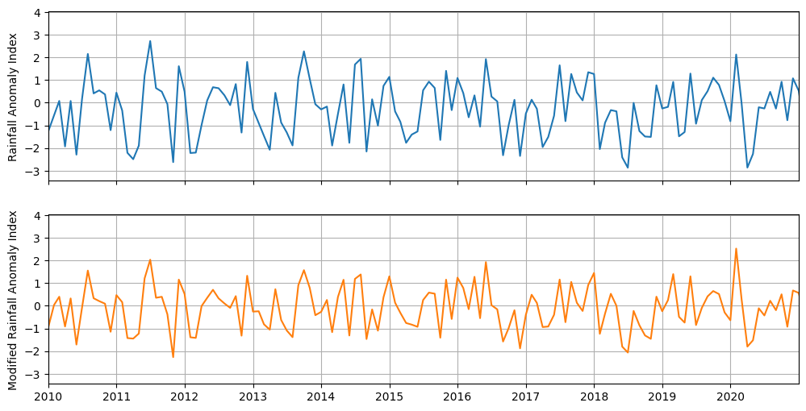

Rainfall Anomaly Index¶
Based on van Rooy, M.P. (1965). A Rainfall Anomaly Index Independent of Time and Space. Notos.
Packages¶
[1]:
import matplotlib as mpl
import matplotlib.pyplot as plt
import pandas as pd
from spei.rai import mrai, rai
Data¶
[2]:
df = pd.read_csv("data/DEBILT.csv", index_col=0, parse_dates=True)
prec = df["Prec [m/d] 260_DEBILT"].multiply(1e3).resample("MS").sum()
Calculate Index¶
[3]:
ra_index = rai(prec)
mra_index = mrai(prec, sf=1.7)
Visualize¶
[4]:
f, ax = plt.subplots(2, 1, figsize=(12, 6), sharex=True, sharey=True)
ax[0].plot(ra_index.index, ra_index.values, color="C0")
ax[1].plot(mra_index.index, mra_index.values, color="C1")
ax[0].set_ylabel("Rainfall Anomaly Index")
ax[1].set_ylabel("Modified Rainfall Anomaly Index")
ax[0].grid(True)
ax[1].grid(True)
ax[1].yaxis.set_major_locator(mpl.ticker.MultipleLocator(1))
ax[1].xaxis.set_major_locator(mpl.dates.YearLocator(1))
ax[1].set_xlim(pd.Timestamp("2010-01-01"), pd.Timestamp("2020-12-31"))
[4]:
(np.float64(14610.0), np.float64(18627.0))

Interpretation based on Hansel (2015) - The Modified Rainfall Anomaly Index (mRAI)
RAI |
Description |
mRAI |
Description |
|---|---|---|---|
\(\ge\) 3.00 |
Extremely wet |
\(\ge\) 2.00 |
Extremely wet |
2.00 to 2.99 |
Very wet |
1.50 to 1.99 |
Very wet |
1.00 to 1.99 |
Moderately wet |
1.00 to 1.49 |
Moderately wet |
0.50 to 0.99 |
Slightly wet |
0.50 to 0.99 |
Slightly wet |
-0.49 to 0.49 |
Near normal |
-0.49 to 0.49 |
Near normal |
-0.99 to -0.50 |
Slightly dry |
-0.99 to -0.50 |
Slightly dry |
-1.99 to -1.00 |
Moderately dry |
-1.49 to -1.00 |
Moderately dry |
-2.99 to -2.00 |
Very dry |
-1.99 to -1.50 |
Very dry |
≤-3.00 |
Extremely dry |
≤-2.00 |
Extremely dry |